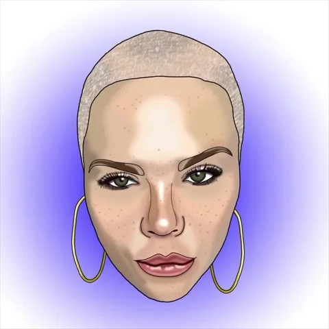

-Pinzas: ¡Pelo a pelo, la paciencia es la clave! Método clásico y preciso, ideal para eliminar pelos individuales y dar forma detallada a las cejas.
-Cera: Cejas perfectas en un tirón... ¡Aguanta la respiración! Método rápido que arranca varios pelos de raíz, dejando una piel suave y limpia.
-Hilo (Threading) "Con hilo y destreza, tus cejas tendrán firmeza." Técnica tradicional que usa un hilo de algodón para remover pelos desde la raíz, ideal para una forma precisa.
-Depilación con Cuchilla "Rápido como un rayo... ¡pero cuidado con los retoques diarios!" Rápido y conveniente, pero los resultados son temporales y el vello puede crecer más grueso.
-Electrólisis Corriente eléctrica para cejas libres de drama." Método permanente que utiliza una corriente eléctrica para destruir el folículo piloso.
5414654562